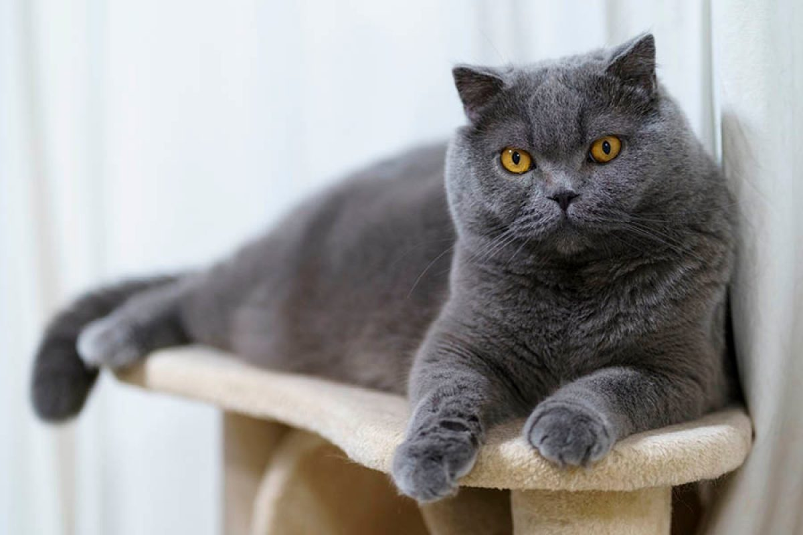
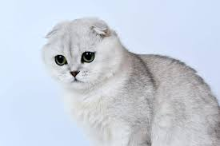

GATO FOLD ESCOCES
La característica más evidente del gato fold escocés son sus orejas, que son pequeñas y están dobladas hacia adelante de tal modo que cubren la abertura de la oreja por completo. Tiene las puntas de las orejas redondeadas. El fold escocés es un gato de tamaño mediano con un cuerpo firme y compacto. La cabeza tiene una forma redondeada, con pómulos salientes y se asienta sobre un cuello corto. Los ojos son grandes, muy abiertos y de expresión dulce. El pelaje del fold escocés es corto y denso. Tiene una gran variedad de colores y patrones.
DESCRIPCION DE RAZA
El fold escocés, llamado así por sus orejas dobladas hacia adelante (fold en inglés significa pliegue o doblez), se consideró en un principio una mutación natural en Escocia en la década de los sesenta. Numerosos veterinarios y jueces británicos decidieron que las orejas dobladas de esta raza eran una deformidad indeseable e imposibilitarían que el gato se limpiara las orejas. Las deformidades de la columna vertebral, las patas traseras y la cola también aparecieron al cruzar estos gatos de orejas dobladas entre sí. Por este motivo, el órgano rector de la asociación británica de amigos de los gatos decidió no permitir el registro del fold escocés. La raza fold escocés es popular en los Estados Unidos y en otros países.

Este gato es increíblemente inteligente, afectuoso y obstinado, y se le considera el extrovertido del mundo felino. Tiende a establecer vínculos estrechos con una persona, y suele ser muy locuaz, con una voz grave y contundente. No es un gato que le guste a todo el mundo, sino que es atractivo para un tipo de persona muy concreto.
